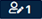
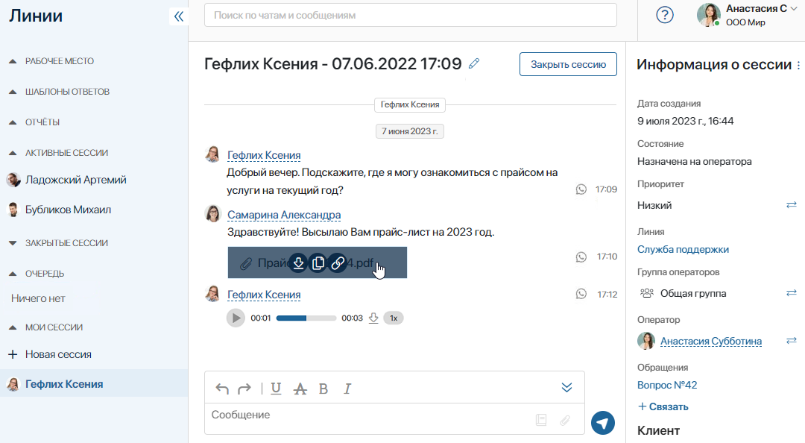

When someone sends a message to a live chat, all operators of this live chat are notified, and a counter of new requests appears in the bottom left corner of the page.
- The counter on the workspace name shows the number of unread messages in sessions assigned to the operator or supervisor with the operator’s rights.
- The counters at the bottom of the page show the total number of new unassigned sessions in the live chats that the employee is responsible for.
- is shown only to operators.
-  is available to supervisors.
Users included in the Administrators group can hide unassigned session counters.
- The number next to the session name indicates the number of unread messages in that session.
- The New icon is placed next to each unassigned session in the general list of sessions.
In the general live chat settings, system administrators can enable sound alerts for operators when a new request is received.
Session page
To start working on a new session, an operator clicks the blue counter in the bottom left corner of the page. The session page opens. The session will be automatically assigned to the current operator.
The operator can also select a session from the Queue group, go to the chat page, and click the Start Work button on the top panel.
Please note that operators in the Offline status can only view sessions. To reply to a message or change a session parameter, an operator has to change their status to Online. Read more in the Operator status article.

The session page is divided into three parts:
- The left menu features Sessions, Blocklist and SLA apps, Response Templates directories, Report page, as well as all sessions available to the user, divided into groups. Read more in How the Live Chats workspace is organized.
- In the center of the page, the dialog window is displayed. The operator can chat with the customer here.
- In the sidebar on the right, you can view session information.
Dialog window
In the dialog window, the operator corresponds with the user. If the user has contacted from a messenger, the messenger icon will be displayed to the right of their messages.
Operators can:
- When right-clicking on a message:
- Copy the text of a message.
- Quote the message in the reply. By clicking on the quote, the operator can go back to the original message.
- Edit their messages and replace a previously attached file in sessions of:
- A live chat with BRIX users.
- LiveChat. When connecting a LiveChat, the administrator can also allow clients to edit their messages.
- Telegram or TelegramBot during no more than 48 hours from sending the message.
- Delete a previously attached file when editing their messages in sessions of a live chat or LiveChat.
The options of editing a message and deleting a file are displayed in the active session if editing is allowed in the general live chat settings.
- By hovering the mouse over a file attached to a message:
- Download the file to their PC by clicking
 .
. - Save a copy of the file in the selected folder in the Files workspace by clicking .
- Copy the link to download the file by clicking
 .
. - Open the file preview by clicking the area around the file.
- In the chat window, interact with voice messages sent by the user:
- Listen to the message by clicking
 .
. - Download the message to the computer by clicking
 .
. - Change the playback speed of the voice message by clicking
 .
.
- Rename a session by clicking the
 icon and entering a new name at the top of the page.
icon and entering a new name at the top of the page. - In the field at the bottom of the page, the operator can:
- Send text messages and use ready-made response templates by clicking the
 icon.
icon. - Attach files from the PC, from the Files workspace, or from the page of an app item to which the operator has associated the session, such as a request or an application.
- With the
 icon, open the menu of the built-in HTML editor and format the entered text.
icon, open the menu of the built-in HTML editor and format the entered text.
- When closing the session page, save the unsent message in the input field automatically.
- When finishing the conversation, click the Close Session button. The supervisor and all the live chat operators receive a notification in their #Activity stream. The session becomes inactive, but the chat history is saved in the system. It will be shown in the chat the next time the customer sends you a message.
In addition, the system administrator can control the available key combinations for sending messages, as well as enable displaying a confirmation window before sending. Read more in the General live chat settings article.
The following notifications help manage processing requests:
- System notifications in the session chat. They allow you to track the history of handling the request. They are available only in the BRIX interface and are not sent to the client.
- Notifications about the status of session processing set up by default. These include starting work, reassigning, closing, etc.
- Custom notifications. These are notifications about different events that occur within business processes. For example, about renaming a session, changing its priority, or changing the status of a request associated with it. For this purpose, the system administrator configures custom notifications using a script. Read more in the Configure automatic process start article.
About the session
The right-hand side of the session window displays the main information about the session and the contacted client.

- There is the
 icon in the upper right corner that allows employees in the Online status to perform the following actions with the session:
icon in the upper right corner that allows employees in the Online status to perform the following actions with the session:
- Start Business Process. During a conversation, the operator can launch an instance of any process right from the chat window, for example, if a customer places an order. The operator takes down all the details and starts the order handling process. The operator won’t have to specify the input data for the business process. To learn more, see Manually start a business process.
- Mark as Spam. If this option is selected, the session will no longer be displayed in the general list of sessions, distributed by routing rules, included in reports, or taken into account in the automatic launch of business processes.
Please note that only users who have been granted access to the Sessions app by the system administrator can view the list of locked sessions.
- Remove from Spam. When clicked, the session will be restored from spam. The action is displayed if the session is locked.
- System messages. You can temporarily display or hide system notifications in chat, such as applied routing rule, session reassignment, etc. After the page refreshes, the general settings for displaying such notifications set by the administrator are applied.
- Date of creation and status of the conversation, as well as the live chat name.
- The session priority set by the supervisor or the operator. It shows how important the request is. Click the icon to change the priority. You can choose between Low, Medium, and High priority. The default value is Priority not set.
- The responsible operator or group that the operator belongs to. Use the icon to reassign the session to another operator or group of operators specified in the live chat settings. Only Online operators can be available for selection if the system administrator has enabled the restriction in the general live chat settings.
If the operator of the main group is unable to process the incoming request, they reassign the session to a specialist of a certain department, for example, an accountant. The operator or group of operators will see a notification saying that the session has been reassigned to them in their #Activity stream. - The app that was selected when configuring live chat in the To register messages field. To create a new app item, for example, to register a new request or reclamation, click +Bind and then click the
 button.
button.
To remove the binding between a session and an app item, hover over the name of the item and click the trash can icon that appears.
- Information about the customer:
- For employees who wrote to the live chat from BRIX, you will see a link with the username in the Internal user field.
- If an internal or external user contacts you via a messenger connected to the live chat, their data will be copied from their messenger profile: name, profile picture, account, and the name of the messenger.
When processing requests, the operators with the Online status can:
- Add the client into the database, i.e., create a record with user data in the app specified when setting up the live chat in the To bind an account field. To do this, under the app name, click +Bind, and then click .
- Change the client list. If email is used as a channel, you can send messages to multiple email addresses within a session. You can:
- Add recipients. Next to the client list, click +Add and specify the desired accounts. Only users who have already contacted the live chat via email are available for selection.
- Delete recipients. Next to the user name, click on the three dots and select Delete Client. Please note that you cannot delete the main client who has sent a live chat message or is specified by the operator when creating a session.

- Lock or unlock a client. Add a user to the blocklist so that their messages are automatically marked as Spam, or unlock them. To do this, click on the three dots next to the user’s name and select the desired option.
The administrator sets which employees can lock and unlock customer accounts on the session page. By default, actions are available to operators and supervisors.
Search in live chats
At the top of the Live Chats workspace, you can see the search bar. By default, the search is performed in chats and messages:
- If a specific session is opened, the search is performed by its name and by the history of messages in this chat.
- If no session is opened, the search is performed only by session names.
Other than that, the search is performed in the same way as in chats in the Messages workspace.
To search for sessions by parameters, such as creation date or operator, you need to have access to the Sessions app. Access permissions can be granted by the system administrator. Read more in the Search and filters article.
Found a typo? Select it and press Ctrl+Enter to send us feedback